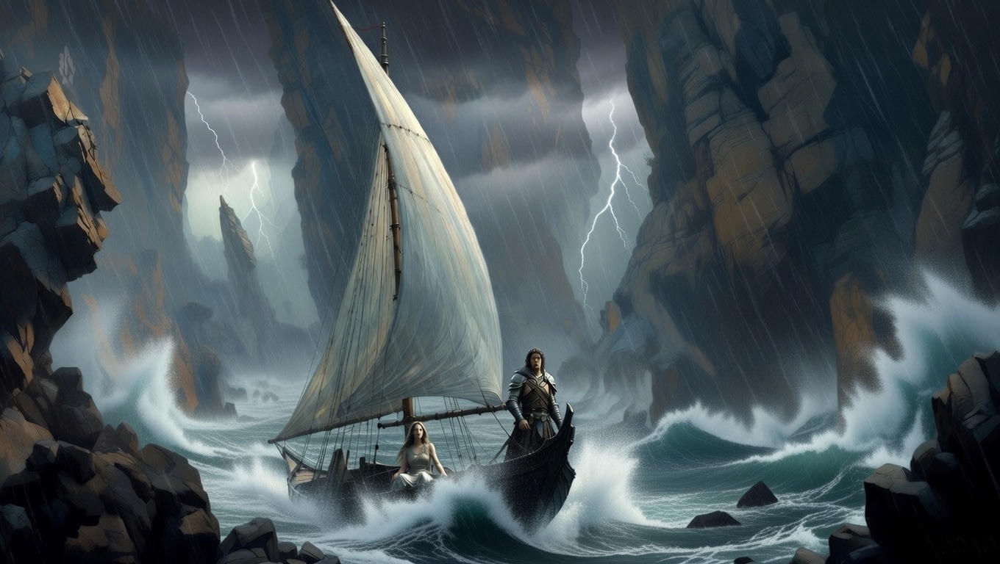
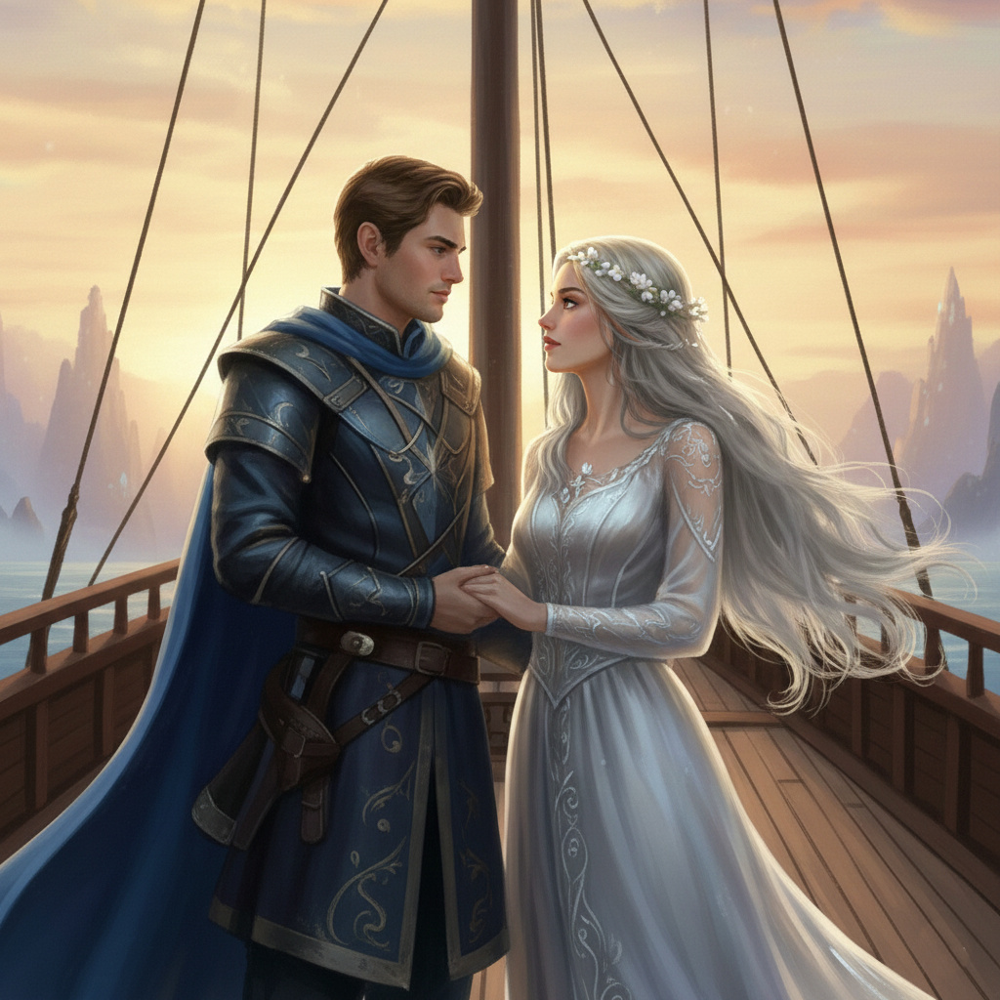
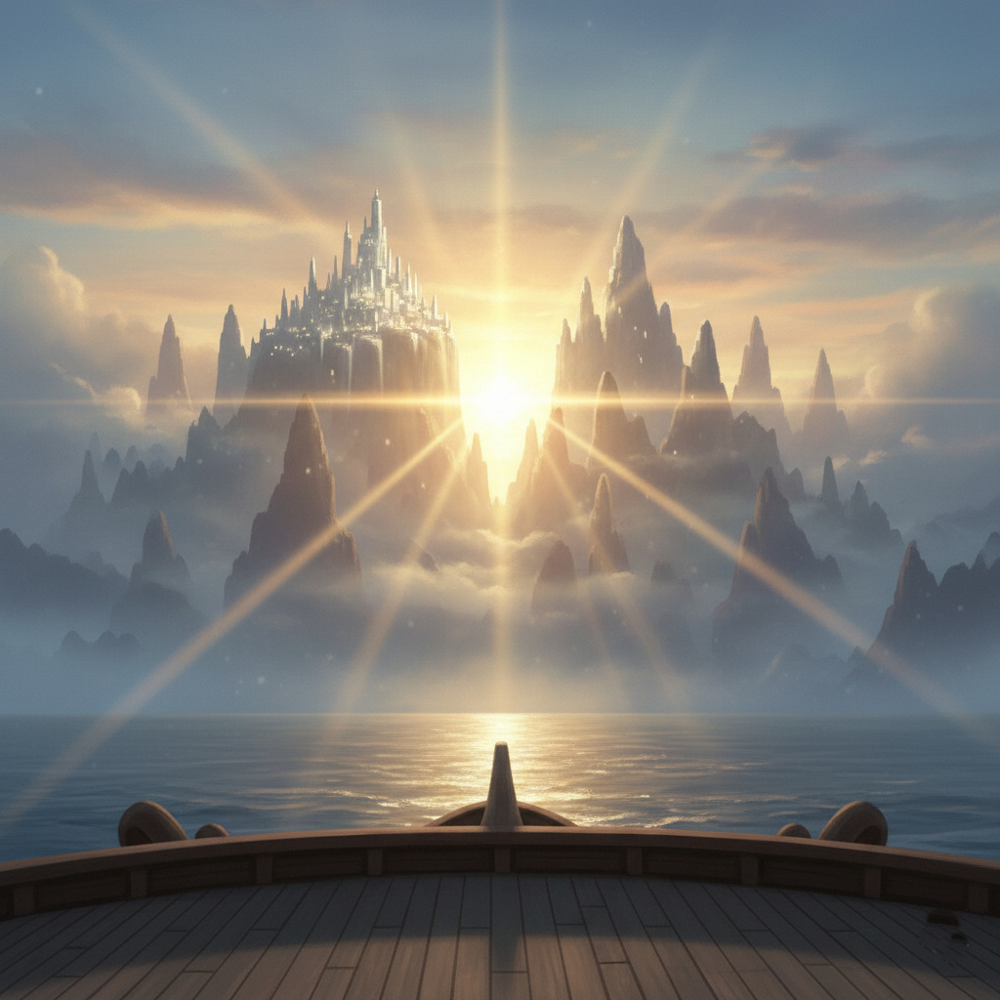

Ajánlom egy kedves barátomnak, aki keresi a pillanatban rejlő örökkévalóságot, és mer hinni a szív órájának szavában.
A vitorlás neve Anima volt, és valóban nem hasonlított semmilyen földi bárkára. Nem volt rajta sem evező, sem kormány, csupán egyetlen hatalmas, áttetsző vitorla, amely úgy vibrált a köd felett, mint egy kifeszített gondolatbuborék.
– A hajó az akaratunkból meríti az erejét – mondta Honóra, miközben a fedélzetre léptek. – Ahhoz, hogy haladjunk, egyetlen célra kell fókuszálnunk.
Kezdetben minden jól ment. Mindketten a távoli horizontot látták maguk előtt, a Ködös Kikötő elhagyását és az ismeretlen partok elérését. A hajó sebesen siklott az ezüstös párán. Ám ahogy a sűrű köd teljesen körülzárta őket, a csend fojtogatóvá vált.
Alerion a hajó orrában állt, tekintete a sötétséget fürkészte. – Gyorsabban kell mennünk, Honóra. Úgy érzem, az idő itt ismét ellenünk dolgozik. Ha nem érjük el a túlsó partot napkeltéig, a köd örökre itt tart minket. Erőre van szükségünk, akaratra, ami áttöri ezt a falat!
Honóra azonban a hajó közepén ült, lehunyt szemmel. – Nem, Alerion. Nem áttörni kell. A köd nem ellenség, hanem oltalom. Ha túl erősen akarsz haladni, elszakasztod a vitorlát. Érezni kell az áramlást, hagyni, hogy a hajó magától találja meg a rést a párában.
A hajó hirtelen megtorpant. A vitorla ernyedten lógott alá.
– Megálltunk – állapította meg Alerion feszülten. – Mert te nem akarsz haladni! Csak ülsz ott és vársz a csodára, miközben a percek kifolynak a kezünk közül. Porig falujában is az ész mentett meg minket, most is az kell: egy tiszta cél és az erő, hogy elérjük!
Honóra felállt, szemeiben szomorúság villant. – Az ész nem csak számolás, Alerion. Az ész azt is jelenti, hogy tudjuk, mikor kell megállni. Te mindig harcolni akarsz. Le akartad győzni az Időfalót, le akartad győzni a logikai feladványt... de a tengert nem lehet legyőzni. Vele együtt kell létezni.
– Én nem legyőzni akarom, hanem túlélni! – csattant fel a lovag. – Érted teszem! Hogy biztonságba vigyelek!
– De én nem biztonságot akarok mindenáron, hanem azt, hogy értsd meg: nem vagyunk egyedül ebben a világban! – vágott vissza a tündér.
A hajó váratlanul billegni kezdett, pedig a víz tükörsima volt. A vitorla színe szürkére váltott, és baljós sercegés hallatszott. A kettőjük közötti feszültség, a „gyorsaság és erő” kontra „türelem és elfogadás” ellentéte fizikailag kezdte szétfeszíteni a bárkát.
– Nézd, mit tettél! – mutatott Alerion a repedező deszkákra.
– Én? Te vagy az, aki nem képes elengedni az irányítást! – válaszolt Honóra, és az ezüst hajtincse sötéten vibrált.
Hosszú percekig álltak egymással szemben, a csend nehezebb volt, mint a köd. Alerion keze a tőre markolatán pihent, de most nem volt ellenség, akit lecsaphatott volna. Honóra ujjai a tarisznyát szorították, de a mágia nem adott választ a dühre.
Alerion volt az, aki végül mély levegőt vett, és leengedte a vállát. Eszébe jutott a mérleg. Az egyensúly.
– A mérleg... – suttogta. – Nem a kard és nem a könnycsepp győzött. Hanem az egyensúly. Honóra... sajnálom. Én tényleg csak... féltelek. Féllek elveszíteni ebben a semmiben.
Honóra arca megenyhült, odalépett a lovaghoz, és kezét a páncélos mellkasra tette. – Tudom. És én is sajnálom. A türelmem néha passzivitásnak tűnhet neked. De látod? A hajó azért állt meg, mert két különböző jövőt álmodtunk.
– Akkor álmodjunk egy közöset – mondta Alerion. – Nem a gyorsaság a cél, és nem is a pihenés. Hanem az, hogy együtt érjünk oda. Mindegy mikor. Mindegy hogyan.
Ahogy összeérintették a homlokukat, a vitorla hirtelen vakító fehér fénnyel telt meg. Nem volt többé „erő” vagy „türelem”, csak egyetlen, tiszta áramlás. A hajó nem egyszerűen elindult; szinte repülni kezdett a párán, mert a két ellentétes akarat most egymást kiegészítve vált tökéletes hajtóerővé.
A köd lassan oszlani kezdett, és a távolban felderengett egy aranyos fény: az Ismeretlen Partok első sugara.